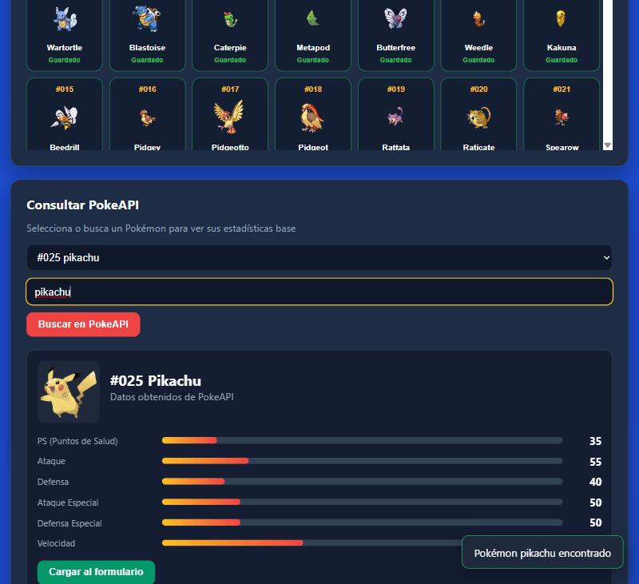
Optativa II · Semana 13 · Gestión de defectos II: triage, seguimiento y métricas
¿La última versión está funcional? Sí en sus funciones principales, pero tenía defectos que impedían
recomendarla. Sobre master pasaron las 27 pruebas anteriores del proyecto (5 smoke, 10 de regresión y 12 del combate)
y las 17 unitarias. De los 16 casos nuevos de esta ronda fallaron 10, y la revisión manual de la interfaz encontró 3 fallas más.
Se registraron 10 defectos (D08–D17): 2 de severidad alta (XSS y datos sin validar), 5 media y 3 baja. Todos se corrigieron. En la ronda 2 se repitieron los casos que fallaron y toda la regresión: 43/43 PASA, 17/17 unitarias, 3/3 contra la PokeAPI real y 4/4 manuales.
Pruebas de interfaz (sección 11): 23 casos en los que un usuario simulado comete errores típicos en el navegador. Confirmaron que la lógica se aplica en pantalla y encontraron 2 defectos más (D18 doble clic en Guardar, D19 texto «a el»). Tras corregirlos: 23/23 PASA, con la regresión completa de nuevo en verde.
Recomendación: LISTO para la demostración académica local con la versión corregida (fe8a5bd),
con los límites de la sección 12. La versión de master sin corregir: NO LISTO.
Objetivo. Determinar si la última versión del proyecto funciona, buscar defectos que las suites anteriores no cubrían y comprobar las correcciones con re-test y regresión.
Alcance incluido. API REST del CRUD, catálogo y sincronización con PokeAPI, API y motor del combate, interfaz del CRUD y del combate, y requisitos no funcionales de rendimiento, seguridad, usabilidad y confiabilidad. Excluido: carga de muchos usuarios, varios procesos escribiendo el mismo archivo, autenticación (el proyecto no la tiene) y compatibilidad con otros navegadores.
Ambiente y datos. Cada caso automatizado levanta su propia API en un puerto libre, con una carpeta temporal vacía y una
PokeAPI simulada (tests/fixture.js) con tipos y estadísticas reales de los Pokémon usados. Así los casos se pueden repetir
y no tocan data/records.json. Las consultas reales (L01–L03) usan https://pokeapi.co. Las pruebas manuales
usan un servidor local con los 151 Pokémon sincronizados.
| Riesgo | P | I | P×I | Casos que lo cubren |
|---|---|---|---|---|
| Entradas inválidas o maliciosas guardadas o ejecutadas | 3 | 3 | 9 | R04–R06, R10, E01–E04, N03, M01 |
| CRUD básico sin funcionar o pérdida de datos | 2 | 3 | 6 | S01–S05, N07 |
| Lógica de combate incorrecta (daño, turnos, fin) | 2 | 3 | 6 | 17 unitarias, C01–C12, E08, E09 |
| Fallo o respuesta extraña de PokeAPI | 2 | 3 | 6 | R09, C12, E05, E08, M03, L01–L03 |
| Datos inconsistentes entre CRUD y combate | 2 | 2 | 4 | E07, C01, C02 |
| Mensajes confusos o funciones de la interfaz rotas | 2 | 2 | 4 | N05, M02, M04 |
| Lentitud o errores con peticiones simultáneas | 1 | 2 | 2 | N01, N02, N06 |
| Suite | Casos | Comando |
|---|---|---|
| Unitarias del motor de combate | 17 | npm run test:unit |
| Smoke (semana 7) | S01–S05 | npm run test:smoke |
| Regresión del CRUD (semana 7) | R01–R10 | npm run test:regression |
| Regresión del combate | C01–C12 | npm run test:combat |
| Caja negra y tablas de decisión (nuevos) | E01–E09 | npm run test:exploratoria |
| No funcionales con umbral (nuevos) | N01–N07 | npm run test:nofuncional |
| Integración con la PokeAPI real | L01–L03 | npm run test:live -- --run=<carpeta> |
| Manuales en el navegador | M01–M04 | Pasos de la sección 5 |
| Interfaz automatizada (usuario simulado) | U01–U23 | npm run test:ui |
Entrada: dependencias instaladas, smoke en verde y resultado esperado definido para cada caso antes de ejecutarlo. Detención: una smoke fallida detiene la ronda. Salida: todos los casos en PASA, ningún defecto alto o medio abierto y re-test con evidencia de cada corrección. PASA: cumple lo esperado. FALLA: no coincide. BLOQUEADO: no se pudo comprobar.
| Nivel | Qué se probó | Casos |
|---|---|---|
| Unitaria | Fórmula de daño, tabla de tipos, STAB, precisión, críticos, orden por Velocidad y fin del combate, sin servidor ni interfaz | 17 en tests/unit/combat.test.js |
| Integración | API con almacenamiento JSON y con PokeAPI (simulada y real); contrato de errores | R01–R10, C12, E03–E08, L01–L03 |
| Sistema | Flujos completos: sincronizar, crear, combatir hasta el final; servidor con archivo dañado | S04, R08, C09–C11, N06, N07 |
| Aceptación | Criterios de la especificación del combate y del CRUD en la interfaz real | C01–C12, M01–M04 |
Tipos: funcional (S, R, C, E, M01–M03) y no funcional (N01–N07, M04). Estrategias: smoke para decidir si seguir; regresión después de cada corrección; priorización por riesgo; y exploración guiada con objetivos concretos (datos raros en cada campo, rutas manipuladas, proveedor caído, archivo dañado, renombrar registros, cabeceras HTTP y la interfaz con contenido HTML). Cada hallazgo de la exploración se convirtió en un caso repetible (E o N) o en un caso manual (M) antes de reportarlo como defecto.
| Entrada | Clases válidas | Clases inválidas | Valores límite probados | Casos |
|---|---|---|---|---|
| Nombre del Pokémon | Texto de 1 a 40 caracteres sin < > (incluye acentos, punto, apóstrofo, ♀/♂: Mr. Mime, Nidoran♀, Farfetch'd) |
Vacío o espacios; más de 40; con HTML o caracteres de control; no texto | 0 → 400; 1 → 201; 39 → 201; 40 → 201; 41 → 400; 5000 → 400 | R04, E01, E02 |
| Estadísticas (6) | Entero 1–999 o texto numérico | 0, negativo, 1000, decimal, texto, vacío, null, booleano, lista, objeto | 0 → 400; 1 → 201; 999 → 201; 1000 → 400 | R05, R06 |
pokemonId | Ausente o null; entero 1–100000; texto numérico | 0, negativo, decimal, >100000, texto, vacío, objeto, booleano, lista | 0 → 400; 1 → 201; 100000 → 201; 100001 → 400 | E03 |
sprite | URL http/https sin espacios ni comillas, de hasta 500 caracteres | javascript:, data:, con comillas, ftp:, más de 500 caracteres, número | URL de 519 caracteres → 400 | E04 |
Identificador en /api/pokemon/:name | Letras, números y guiones (1–40), con espacios alrededor | .., ., ../25, con espacio interno | %20PIKACHU%20 → 200 | R01, E05 |
| Paginación del catálogo | limit ≥ 1, offset ≥ 0 | Negativo, 0 en limit, decimal, texto, repetido | offset=150 → solo Mew; offset=151 → vacío | R03 |
Negativos básicos y datos raros aplicados: vacío, null, espacios, caracteres especiales, HTML, formato inválido, campos muy largos, tipo incorrecto, JSON truncado, cuerpo de 200 KB, ruta manipulada y archivo de datos dañado.
Para cada tabla se calcularon las 2n combinaciones y se colapsaron las columnas cuyo resultado no depende de una condición (–). Cada regla es un caso de prueba; la cobertura es el porcentaje de reglas ejecutadas.
TD1. Crear registro (4 condiciones: 24 = 16 combinaciones, colapsadas a 5 reglas)
| Condición / acción | Regla 1 | Regla 2 | Regla 3 | Regla 4 | Regla 5 |
|---|---|---|---|---|---|
| ¿Nombre válido? | V | F | V | V | V |
| ¿Seis estadísticas válidas? | V | – | F | V | V |
| ¿pokemonId válido o ausente? | V | – | – | F | V |
| ¿sprite válido o ausente? | V | – | – | – | F |
| Guardar y responder 201 | Sí | No | No | No | No |
| Responder 400 sin guardar | No | Sí | Sí | Sí | Sí |
| Casos | S02 | R04, E01, E02 | R05 | E03 | E04 |
| Ronda 1 / ronda 2 | PASA / PASA | FALLA / PASA | PASA / PASA | FALLA / PASA | FALLA / PASA |
Las reglas 4 y 5 no estaban en la suite anterior. Al escribirlas apareció D09, y en la regla 2 con contenido HTML apareció D08.
TD2. Iniciar combate (4 condiciones: 16 combinaciones, colapsadas a 5 reglas) · caso E08 y C12
| Condición / acción | Regla 1 | Regla 2 | Regla 3 | Regla 4 | Regla 5 |
|---|---|---|---|---|---|
| ¿Existen los dos registros? | V | F | V | V | V |
| ¿Tienen tipos guardados? | V | – | F | F | F |
| ¿PokeAPI responde? | – | – | V | F | V |
| ¿El Pokémon existe en PokeAPI? | – | – | V | – | F |
| Respuesta | 201 sin consultar PokeAPI | 404 | 201 y guarda tipos | 502 | 422 |
| Ronda 1 / ronda 2 | PASA / PASA | PASA / PASA | PASA / PASA | PASA / PASA | PASA / PASA |
TD3. Ejecutar turno (3 condiciones: 23 = 8 combinaciones, colapsadas a 4 reglas) · caso E09, C11 y C12
| Condición / acción | Regla 1 | Regla 2 | Regla 3 | Regla 4 |
|---|---|---|---|---|
| ¿Existe el combate? | F | V | V | V |
| ¿Está finalizado? | – | V | F | F |
| ¿Movimiento válido? | – | – | F | V |
| Respuesta | 404 | 409 | 400, no avanza la ronda | 200, avanza la ronda |
| Ronda 1 / ronda 2 | PASA / PASA | PASA / PASA | PASA / PASA | PASA / PASA |
TD4. Resolver un ataque (4 condiciones: 16 combinaciones, colapsadas a 5 reglas) · pruebas unitarias y C04–C08
| Condición / acción | Regla 1 | Regla 2 | Regla 3 | Regla 4 | Regla 5 |
|---|---|---|---|---|---|
| ¿Acierta (precisión)? | F | V | V | V | V |
| ¿Efectividad 0 (inmunidad)? | – | V | F | F | F |
| ¿Tipo del movimiento = tipo del atacante? | – | – | V | F | – |
| ¿Golpe crítico? | – | – | F | F | V |
| Resultado | Daño 0, «¡Pero falló!» | Daño 0, «No afecta», sin crítico | Fórmula × STAB 1,5 | Fórmula × 1,0 | Fórmula × crítico 1,5 |
| Ronda 1 / ronda 2 | PASA / PASA | PASA / PASA | PASA / PASA | PASA / PASA | PASA / PASA |
Cobertura de reglas de las cuatro tablas: 19/19 (100 %). Las tablas TD2–TD4 confirmaron que el combate funciona como se especificó.
Los 27 casos anteriores (S01–S05, R01–R10, C01–C12) se describen en docs/pruebas/CASOS.md y docs/combate/PRUEBAS.md;
pasaron en ambas rondas. Los casos nuevos son:
| Caso | Criterio | Técnica | Datos principales | Resultado esperado | Ronda 1 | Ronda 2 | Defecto |
|---|---|---|---|---|---|---|---|
| E01 | RN-01 | Límites | Nombres de 1, 39, 40, 41 y 5000 caracteres | 201 hasta 40; 400 desde 41; se guardan solo 3 | FALLA | PASA | D16 |
| E02 | RN-01 / RNF-SEG | Equivalencia | Mr. Mime, Nidoran♀, Farfetch'd; <img…>, <script>, control | Válidos 201; con HTML o control 400 en POST y PUT | FALLA | PASA | D08 |
| E03 | RN-02 | Equivalencia y límites | pokemonId ausente, null, 1, "25", 100000; 0, -1, 2.5, 100001, "abc", {}… | Válidos guardados como número; inválidos 400 | FALLA | PASA | D09 |
| E04 | RN-03 / RNF-SEG | Equivalencia | https, http; javascript:, comillas, data:, >500, ftp, 123 | Solo http/https seguras; resto 400 | FALLA | PASA | D09 |
| E05 | CA06 / CA14 | Datos raros | %2E%2E, %2e, ..%2F25, con espacio; respuesta 200 sin stats | 400 sin texto interno; 502 con mensaje claro | FALLA | PASA | D12 |
| E06 | CA15 | Negativos | GET /api/no-existe, DELETE /api/records, POST /api/pokemon/x, GET /api/pokemon/ | 404 con error en JSON | FALLA | PASA | D15 |
| E07 | RF02 / Secc. 11 | Exploratoria | Squirtle #7 combate, se renombra a Bulbasaur y vuelve a combatir | Tipos Planta/Veneno y #1; con número explícito, sigue siendo Agua | FALLA | PASA | D14 |
| E08 | RF01 / Secc. 11 | Tabla de decisión TD2 | 5 reglas | 201 / 404 / 201 / 502 / 422 | PASA | PASA | – |
| E09 | RF04 / RF11 | Tabla de decisión TD3 | 4 reglas | 404 / 409 / 400 / 200 | PASA | PASA | – |
| N01–N07 | Suite no funcional: ver sección 6 | 4 FALLA | 7 PASA | D12, D13, D15, D17 | |||
| M01 | RNF-SEG | Manual | Registro con nombre xss-nombre <img src=x onerror="…"> y otro con sprite x" onerror="…; abrir el CRUD | Se ve como texto; no se ejecuta código | FALLA | PASA | D08 |
| M02 | CRUD Read | Manual | Escribir «pikachu» en «O escribe el nombre» y pulsar Buscar | Muestra a Pikachu | FALLA | PASA | D10 |
| M03 | RNF-CON | Manual | Servidor con 151 registros y PokeAPI inaccesible; abrir el CRUD | Registros visibles y aviso de catálogo no disponible | FALLA | PASA | D11 |
| M04 | RNF-USA-02 | Manual | Ancho 375 px: CRUD y pantalla de combate hasta el menú LUCHAR | Sin desplazamiento horizontal; combate jugable | No ejecutado | PASA | – |
| Requisito o criterio | Casos |
|---|---|
| RN-01 Nombre de 1 a 40 caracteres, sin HTML ni control | R04, R06, E01, E02, M01 |
| RN-02 pokemonId entero opcional entre 1 y 100000 | E03 |
| RN-03 sprite opcional, solo URL http/https segura | E04, M01 |
| CA06/CA14 Consulta y errores del proveedor | R01, R02, R09, E05, M02, M03, L01–L03 |
| CA15 Errores siempre en JSON | R10, E06, N05 |
| RF01–RF11 Combate (especificación técnica) | C01–C12, E07–E09, 17 unitarias |
| RNF-REN-01/02, SEG-01/02, USA-01/02, CON-01/02 | N01–N07, M04 |
| Caso | Requisito | Prioridad (riesgo) | Umbral | Método | Ronda 1 (medido) | Ronda 2 (medido) |
|---|---|---|---|---|---|---|
| N01 | RNF-REN-01 Listar 151 registros | Media | p95 ≤ 300 ms | 30 GET seguidos tras sincronizar | PASA · p95 8,5 ms | PASA · p95 5,8 ms |
| N02 | RNF-REN-02 Resolver una ronda | Media | p95 ≤ 150 ms | 20 rondas contra el salvaje | PASA · p95 2,3 ms | PASA · p95 2,0 ms |
| N03 | RNF-SEG-01 El cliente no altera el combate | Alta | 0 campos del cliente aplicados | Enviar daño, PS, ganador y ataque del salvaje; semilla sin permiso | PASA | PASA |
| N04 | RNF-SEG-02 Cabeceras y tamaño | Alta | Sin X-Powered-By; nosniff; cuerpo > 100 KB → 413 | Leer cabeceras; POST de 200 KB | FALLA · Express | PASA |
| N05 | RNF-USA-01 Errores comprensibles | Media | 100 % JSON con mensaje en español, sin texto técnico | 6 errores distintos (400, 404, 422, 502) | FALLA · 404 en HTML | PASA |
| N06 | RNF-CON-01 Concurrencia y combates completos | Media | 0 respuestas 5xx; combates < 80 rondas | 40 peticiones a la vez; 25 combates hasta el final | PASA · 0 errores | PASA · 0 errores |
| N07 | RNF-CON-02 Archivo de datos dañado | Alta | El servidor sigue activo y responde 500 JSON con la causa | Escribir { en records.json y arrancar | FALLA · proceso terminado | PASA |
| M04 | RNF-USA-02 Uso en móvil | Baja | scrollWidth = 375 px | Viewport de 375 × 812 | No ejecutado | PASA · 375 px en ambas páginas |
Conclusión de la suite: el rendimiento queda muy por debajo de los umbrales en este equipo. En la ronda 1 fallaron los requisitos de seguridad (N04), usabilidad (N05) y confiabilidad (N07); los tres se cumplen en la ronda 2.
| Ronda | Versión | Automatizados | Unitarias | PokeAPI real | Manuales | Aprobación | Decisión |
|---|---|---|---|---|---|---|---|
| 1 · diagnóstico | 31b6d97 (master) | 33 PASA · 10 FALLA · 0 BLOQUEADO | 17/17 | No ejecutada | 0/3 (M01–M03 FALLA) | 76,7 % de 43 | NO LISTO |
| 2 · verificación | fe8a5bd (corregida) | 43 PASA · 0 FALLA · 0 BLOQUEADO | 17/17 | 3/3 | 4/4 | 100 % | LISTO |
| Interfaz 1 | fe8a5bd | U01–U23: 21 PASA · 2 FALLA (D18, D19) | 91,3 % de 23 | NO LISTO | |||
| Interfaz 2 y regresión 3 | cab9c88 | 43/43 PASA | 17/17 | – | U01–U23: 23/23 | 100 % | LISTO |
Reportes con un JSON por caso (peticiones, respuestas, tiempos, salida del servidor y SHA-256 del código):
docs/pruebas/evidencias/semana13-ronda-1-diagnostico/, semana13-ronda-2-verificacion/ y semana13-integracion-real/.
| Métrica | Valor |
|---|---|
| Defectos nuevos de esta ronda | 12 (D08–D17 en API y revisión manual; D18–D19 en pruebas de interfaz) |
| Por severidad | Alta 2 (D08, D09) · Media 6 (D10–D14, D18) · Baja 4 (D15–D17, D19) |
| Por prioridad | P1: 2 · P2: 5 · P3: 4 · P4: 1 |
| Abiertos / cerrados | 0 / 12 (todos verificados con re-test) |
| Reincidentes | 0. Los defectos D01–D06 de la semana 7 no reaparecieron (R03–R10 en PASA en ambas rondas) |
| Por componente | Interfaz del CRUD 4 (D08 en pantalla, D10, D11, D18) · Interfaz del combate 1 (D19) · API REST 5 (D09, D12, D15, D16, D17) · Almacenamiento 1 (D13) · Integración CRUD–combate 1 (D14) · Motor de combate 0 |
| Por tipo de caso que lo detectó | Caja negra E: 5 · No funcional N: 2 · Manual M: 3 · Interfaz automatizada U: 2 |
| Falsos positivos descartados en triage | 4 (fallas del script de interfaz en su primera ejecución; sección 11) |
| Histórico del proyecto | 19 defectos (D01–D19), 19 cerrados, 0 abiertos |
Triage. Antes de registrar cada defecto se confirmó que (1) se reproduce con pasos y datos exactos (todos tienen un caso
automatizado o manual que falla en master), (2) la información está completa (entorno, esperado frente a actual, evidencia) y
(3) su impacto. Se descartaron observaciones que no contradicen ningún requisito: que la API acepte nombres repetidos, ya que no hay una regla
de unicidad, y una primera captura en móvil sin imágenes, que se repitió y resultó ser la animación de entrada en curso.
Severidad es el impacto técnico o para el usuario. Prioridad es la urgencia: P1 se corrige antes de cualquier demostración, P2 antes de entregar, P3 en la misma ronda si el costo es bajo y P4 cuando haya tiempo. Ciclo de vida usado: Nuevo→Asignado→En progreso→Resuelto→Verificado/Cerrado. Ninguno se cerró sin re-test.
| ID | Título | Sev. | Prio. | Caso | Estado | Resuelto en | Re-test |
|---|---|---|---|---|---|---|---|
| D08 | XSS: el CRUD ejecuta HTML del nombre o del sprite de un registro | Alta | P1 | E02, M01 | Cerrado | fe8a5bd | E02, M01 PASA |
| D09 | La API guarda pokemonId y sprite sin validar | Alta | P1 | E03, E04 | Cerrado | fe8a5bd | E03, E04 PASA |
| D10 | La búsqueda ignora el nombre escrito | Media | P2 | M02 | Cerrado | fe8a5bd | M02 PASA |
| D11 | Si PokeAPI falla, el CRUD muestra 0 registros sin aviso | Media | P2 | M03 | Cerrado | fe8a5bd | M03 PASA |
| D12 | /api/pokemon/%2E%2E consulta otra ruta de PokeAPI y expone un error interno | Media | P2 | E05, N05 | Cerrado | fe8a5bd | E05, N05 PASA |
| D13 | Un records.json dañado tumba el servidor al iniciar | Media | P2 | N07 | Cerrado | fe8a5bd | N07 PASA |
| D14 | Renombrar un registro conserva tipos, número e imagen del Pokémon anterior | Media | P3 | E07 | Cerrado | fe8a5bd | E07 PASA |
| D15 | Rutas /api inexistentes responden HTML en lugar de JSON | Baja | P3 | E06, N05 | Cerrado | fe8a5bd | E06, N05 PASA |
| D16 | El nombre no tiene longitud máxima | Baja | P3 | E01 | Cerrado | fe8a5bd | E01 PASA |
| D17 | Cabecera X-Powered-By expone la tecnología y falta nosniff | Baja | P4 | N04 | Cerrado | fe8a5bd | N04 PASA |
| D18 | Un doble clic en «Guardar» crea el registro dos veces | Media | P2 | U06 | Cerrado | cab9c88 | U06 PASA |
| D19 | El mensaje de inmunidad dice «a el» en lugar de «al» | Baja | P3 | U17 | Cerrado | cab9c88 | U17 PASA |
Regresión después de las correcciones: se ejecutaron otra vez todas las suites (17 unitarias, S01–S05, R01–R10, C01–C12, E01–E09, N01–N07, L01–L03 y M01–M04). Ningún caso que pasaba en la ronda 1 dejó de pasar.
Las capturas de la API muestran la petición y la respuesta reales guardadas en la evidencia de cada ronda: la misma petición antes
(31b6d97) y después (fe8a5bd). Se generan con node scripts/capturas-evidencia.js. Las de la interfaz son
capturas del navegador.
| Severidad / prioridad | Alta / P1 |
| Entorno | Windows 11, Node 24.21.0, navegador Chromium, servidor local con los 151 Pokémon sincronizados |
| Casos | M01 (interfaz) y E02 (API) |
| Pasos | 1) POST /api/records con pokemonName = xss-nombre <img src=x onerror="document.body.style.border='10px solid red';this.after('⚠ xss…')">.
2) POST /api/records con sprite = x" onerror="document.body.insertAdjacentHTML('afterbegin','<div…>XSS…').
3) Abrir http://localhost:3000 y filtrar los registros. |
| Esperado | La API rechaza nombres con < > (400) y la interfaz muestra cualquier dato como texto, sin ejecutarlo. |
| Actual | La API respondió 201. Al abrir el CRUD se ejecutó el código: borde rojo, texto inyectado y franjas con «XSS: código ejecutado desde el campo sprite». |
| Causa | public/js/app.js arma el HTML con plantillas sin escapar (innerHTML) y la validación no restringía caracteres. |
| Corrección | Función escapeHtml aplicada a nombre, sprite, ID, etiquetas y valores en catálogo, listas, selectores y resultado de búsqueda.
lib/validation.js rechaza < > y caracteres de control en el nombre (POST y PUT). El sprite se cubre con D09. |
| Re-test | Los mismos registros escritos directamente en records.json (como datos guardados antes de la corrección) se muestran como texto; E02 PASA. |
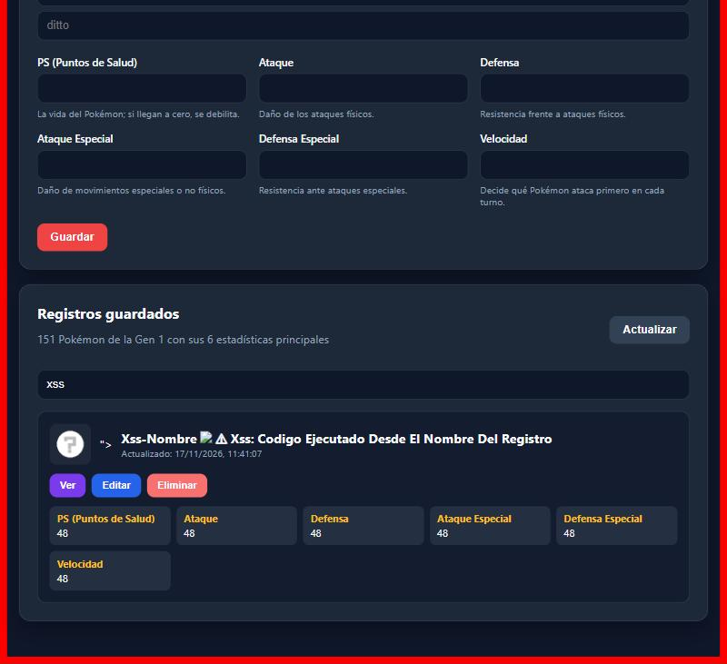
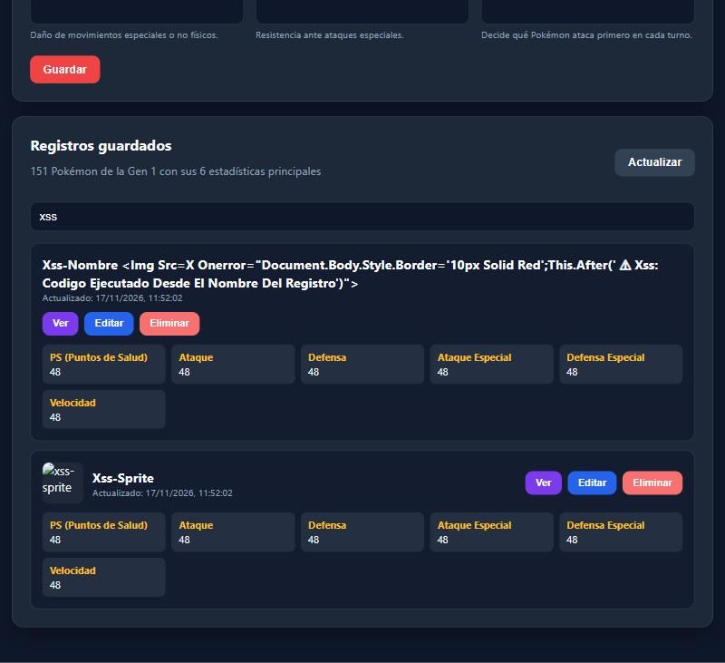
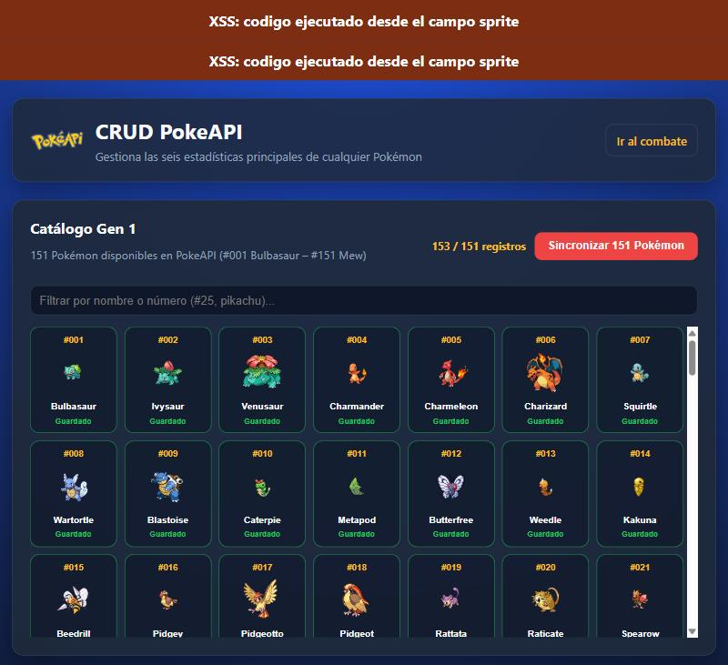
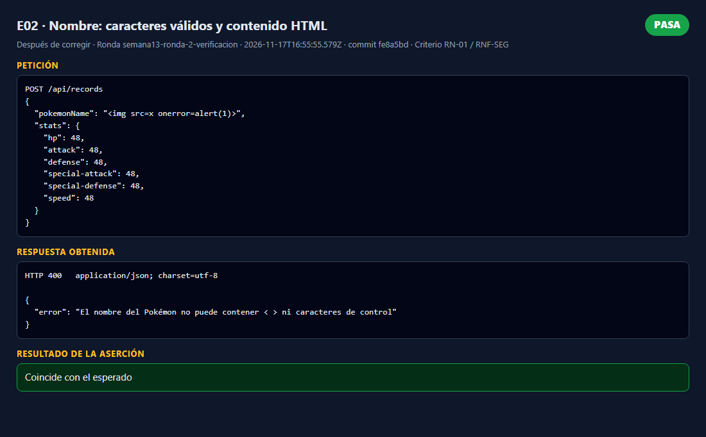
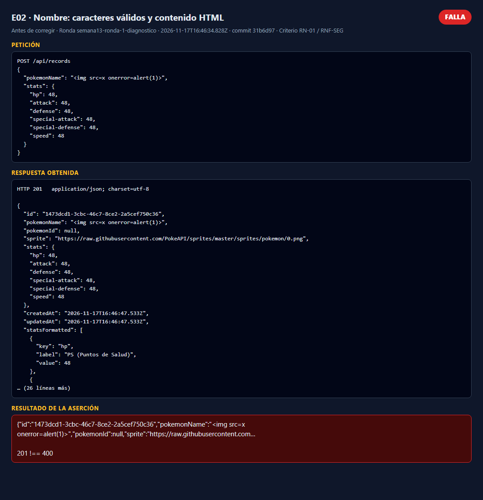
POST con <img src=x onerror=alert(1)> respondió 201.| Severidad / prioridad | Alta / P1 (el sprite sin validar permite el XSS de D08) |
| Casos | E03, E04 · reglas 4 y 5 de TD1 |
| Pasos | 1) POST /api/records con datos válidos y pokemonId = "25", "abc", {"a":1} o 0.
2) POST con sprite = javascript:alert(1). |
| Esperado | pokemonId entero de 1 a 100000 guardado como número; sprite solo http/https; inválidos → 400 sin guardar. |
| Actual | 201 en todos: "25" quedó como texto, {"a":1} como objeto y javascript:alert(1) como imagen. |
| Causa | server.js copiaba req.body.pokemonId || null y req.body.sprite || null sin pasar por la validación. |
| Corrección | validateRecord valida ambos campos (entero 1–100000; URL http/https sin espacios, comillas ni ángulos, de hasta 500 caracteres) y el servidor guarda solo los valores validados. PUT también los acepta validados. |
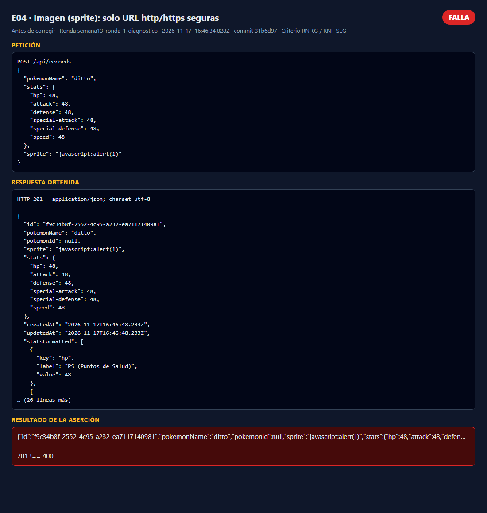
sprite: "javascript:alert(1)" guardado con 201.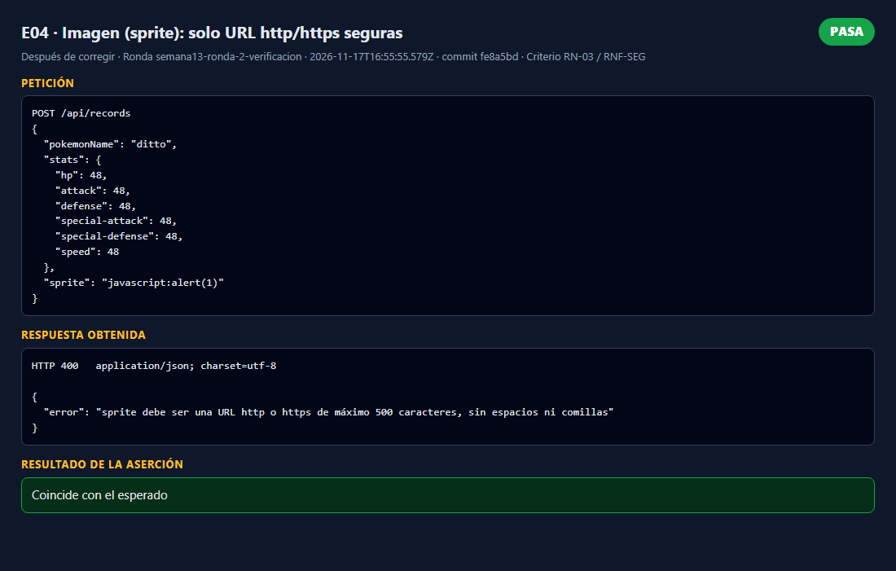
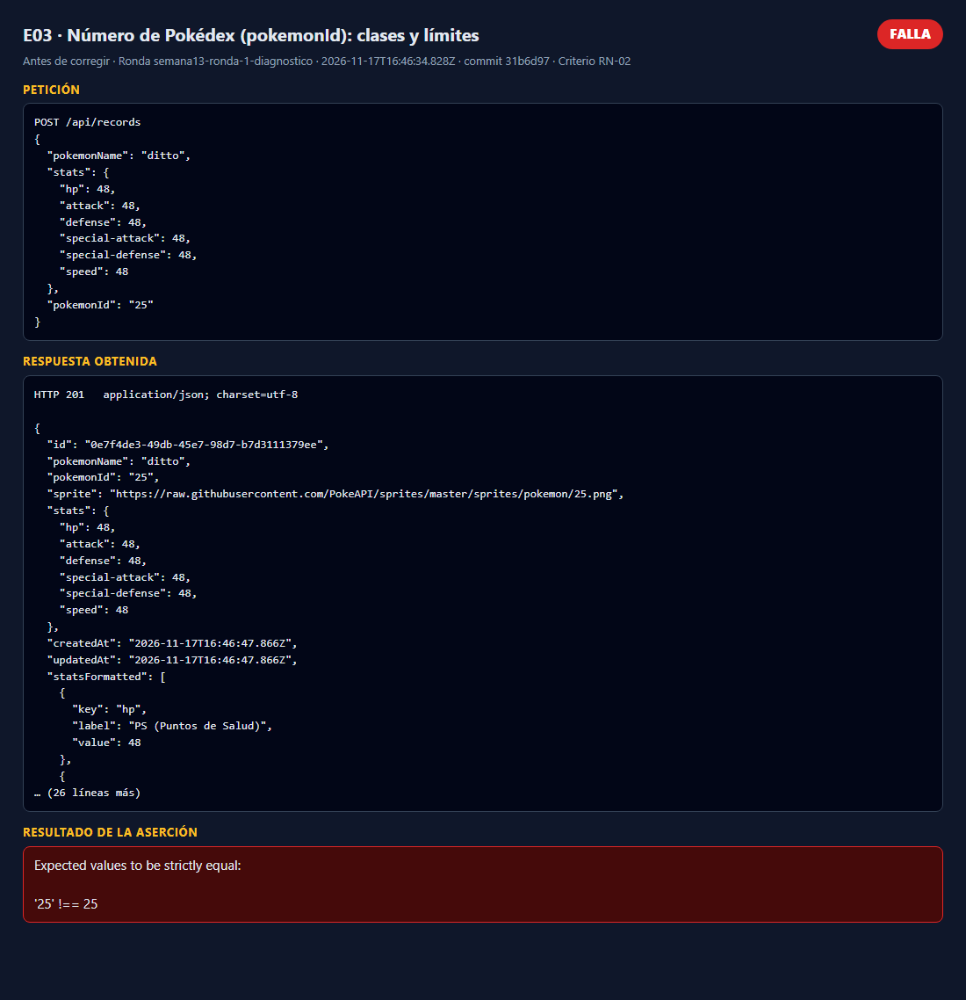
pokemonId: "25" se guardó como texto "25".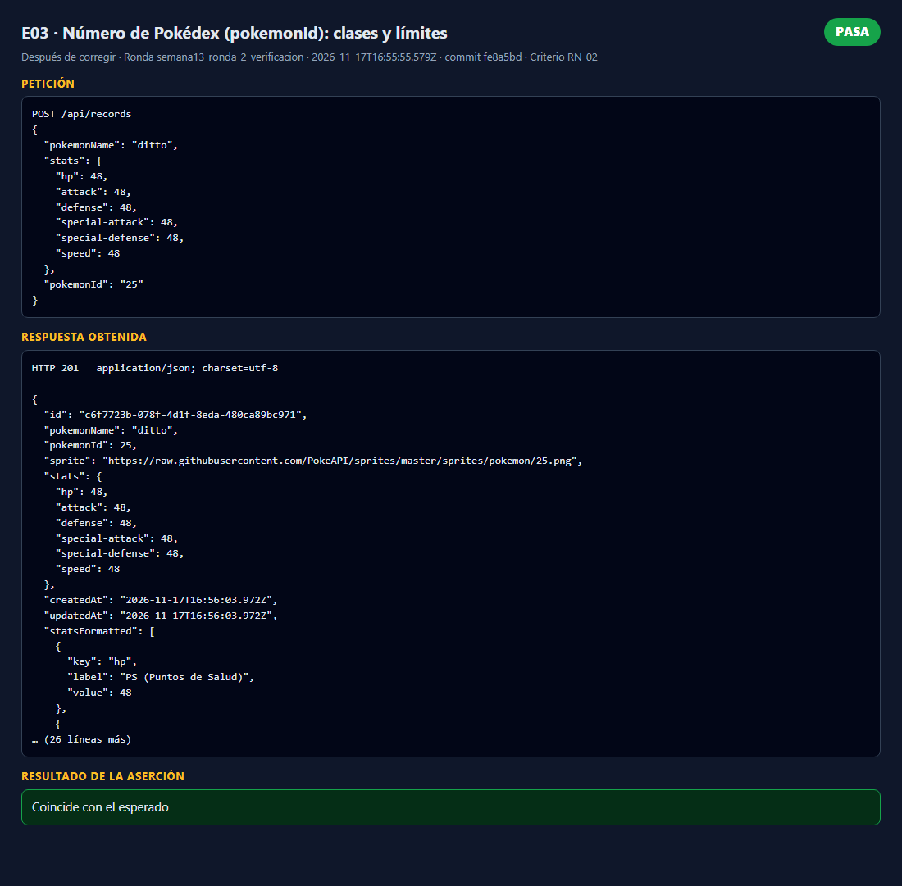
| Severidad / prioridad | Media / P2 |
| Caso | M02 |
| Pasos | 1) Abrir el CRUD (la lista «Selecciona un Pokémon» queda en Ditto). 2) Escribir pikachu en «O escribe el nombre». 3) Pulsar Buscar o Enter. |
| Esperado | Se consulta y muestra Pikachu. |
| Actual | Se muestra Ditto y el texto vuelve a «ditto». Si se vacía la lista, el formulario no se envía («Selecciona un elemento de la lista»), así que el campo de texto nunca se usa. |
| Causa | El envío daba prioridad a la lista sobre el texto y la lista tenía el atributo required. |
| Corrección | El texto escrito manda (elegir en la lista ya lo copia al campo), se quitó required, se avisa si ambos están vacíos y «encontrado» solo aparece si la consulta tuvo éxito. |

| Severidad / prioridad | Media / P2 (los datos parecen perdidos) |
| Caso | M03 |
| Pasos | 1) Iniciar el servidor con 151 registros guardados y POKEAPI_BASE=http://127.0.0.1:9/api/v2/pokemon (proveedor inaccesible). 2) Abrir el CRUD. |
| Esperado | Se ven los registros locales y un aviso de que el catálogo de PokeAPI no está disponible. |
| Actual | «0 / 151 registros», catálogo y lista vacíos, sin mensaje. GET /api/records sí devolvía 153 registros. Consola: TypeError: Cannot read properties of undefined (reading 'map') at populateSelects. |
| Causa | loadGen1List no revisaba la respuesta 502 y la excepción cortaba init() antes de cargar los registros. |
| Corrección | Se maneja el error del catálogo con un aviso, se cargan los registros de todas formas y el aviso del catálogo vacío ocupa todo el ancho. |
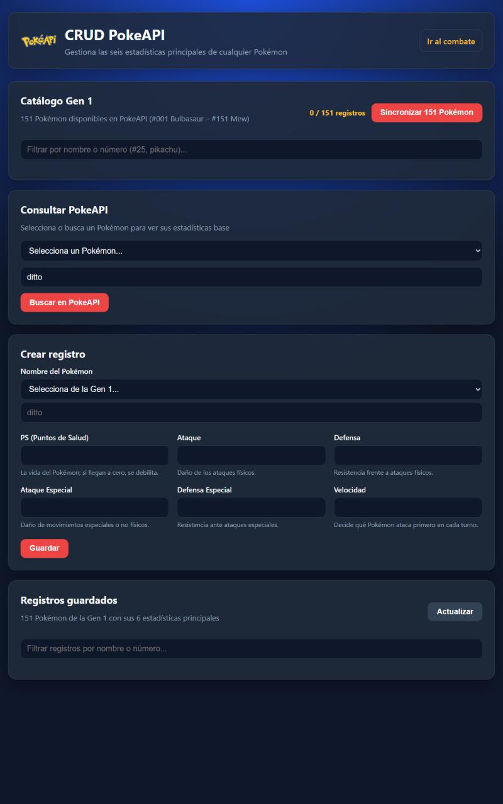
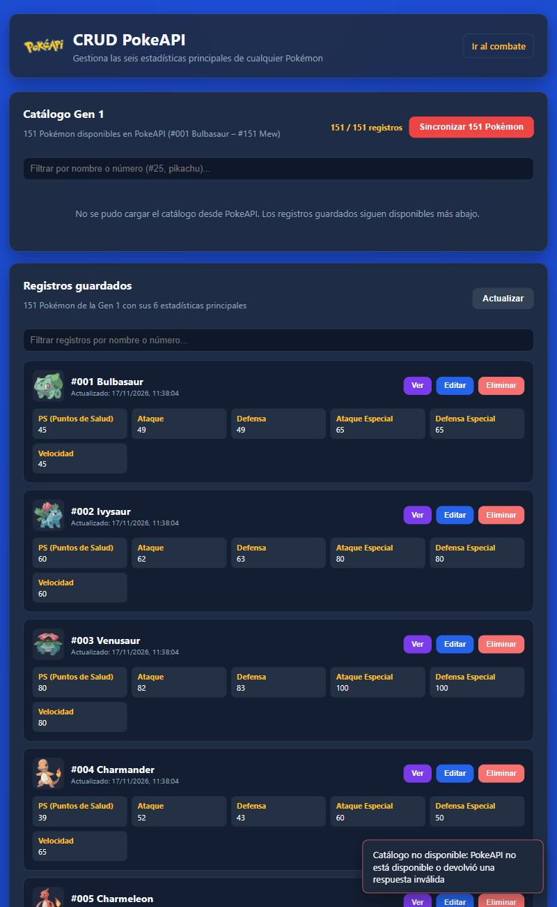
/api/pokemon/%2E%2E consulta otra ruta de PokeAPI y expone un error interno| Severidad / prioridad | Media / P2 |
| Casos | E05, N05 |
| Pasos | 1) Con un cliente HTTP que no normalice la ruta: GET /api/pokemon/%2E%2E. |
| Esperado | 400 con un mensaje claro; no consultar otra ruta del proveedor. |
| Actual | 502 {"error":"stats is not iterable"}. El servidor pidió la raíz de la API de PokeAPI (/api/v2/) y mostró el texto de una excepción interna. |
| Corrección | parsePokemonQuery solo acepta letras, números y guiones (400 si no); mapStatsFromApi rechaza respuestas sin estadísticas con 502 «datos incompletos»; los errores no controlados ya no muestran su mensaje. El combate usa la misma validación al completar datos. |
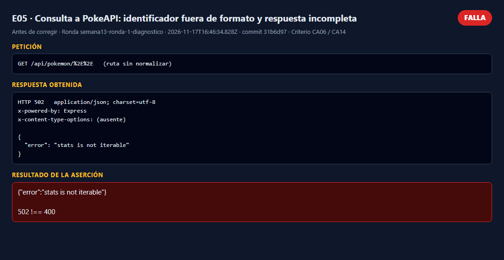
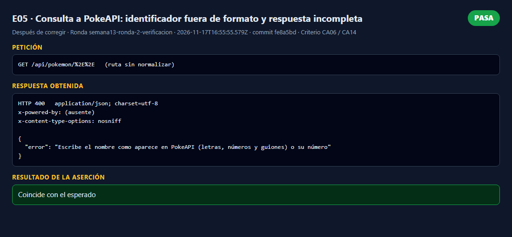
| Severidad / prioridad | Media / P2 (probabilidad baja, impacto alto: la aplicación deja de responder) |
| Caso | N07 |
| Pasos | 1) Escribir { en data/records.json. 2) Iniciar el servidor con la configuración normal (sincronización automática activa). |
| Esperado | El servidor sigue activo; GET /api/records responde 500 en JSON con la causa y el resto de la API funciona. |
| Actual | El proceso imprime «Servidor CRUD PokeAPI en …» y termina con SyntaxError en readRecords llamado desde bootstrapGen1 (promesa rechazada sin manejar). |
| Corrección | parseRecords convierte el JSON inválido (o que no sea una lista) en un error con mensaje para el usuario; bootstrapGen1 queda dentro de try; el manejador de errores responde ese mensaje. Además, un registro sin estadísticas ya no impide listar los demás. |
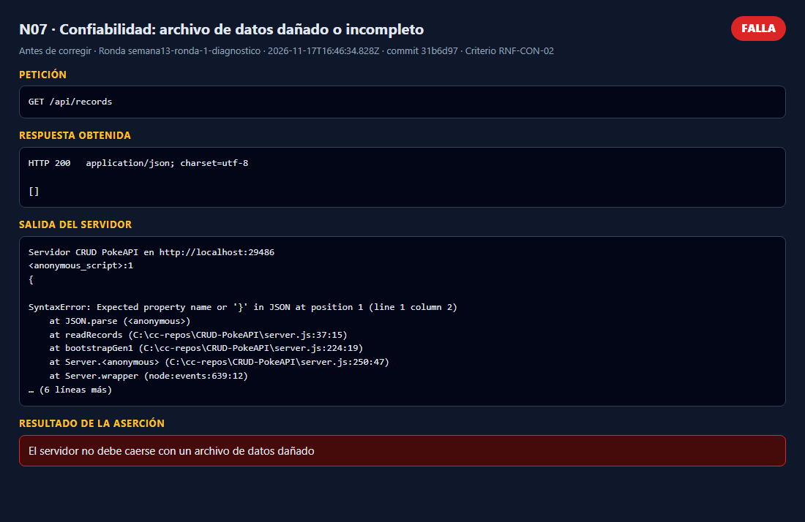
SyntaxError y el proceso terminado.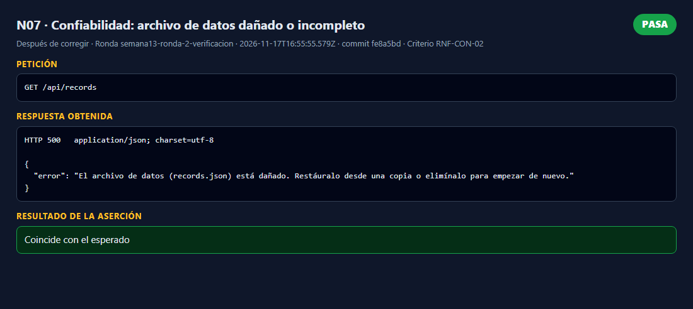
| Severidad / prioridad | Media / P3 |
| Caso | E07 |
| Pasos | 1) Crear Squirtle (#7) y combatir (se guardan sus tipos). 2) PUT con {"pokemonName":"bulbasaur"}. 3) Iniciar otro combate con ese registro. |
| Esperado | Bulbasaur combate con tipos Planta/Veneno, número 1 y su imagen. |
| Actual | Aparece «bulbasaur» con tipo Agua, número 7 e imagen de Squirtle. |
| Corrección | Al cambiar el nombre o el número, el PUT descarta número, imagen y tipos, salvo que el mismo cambio indique el número. El combate completa tipos, número e imagen desde PokeAPI. El formulario del CRUD solo envía el número si el nombre no cambió. |
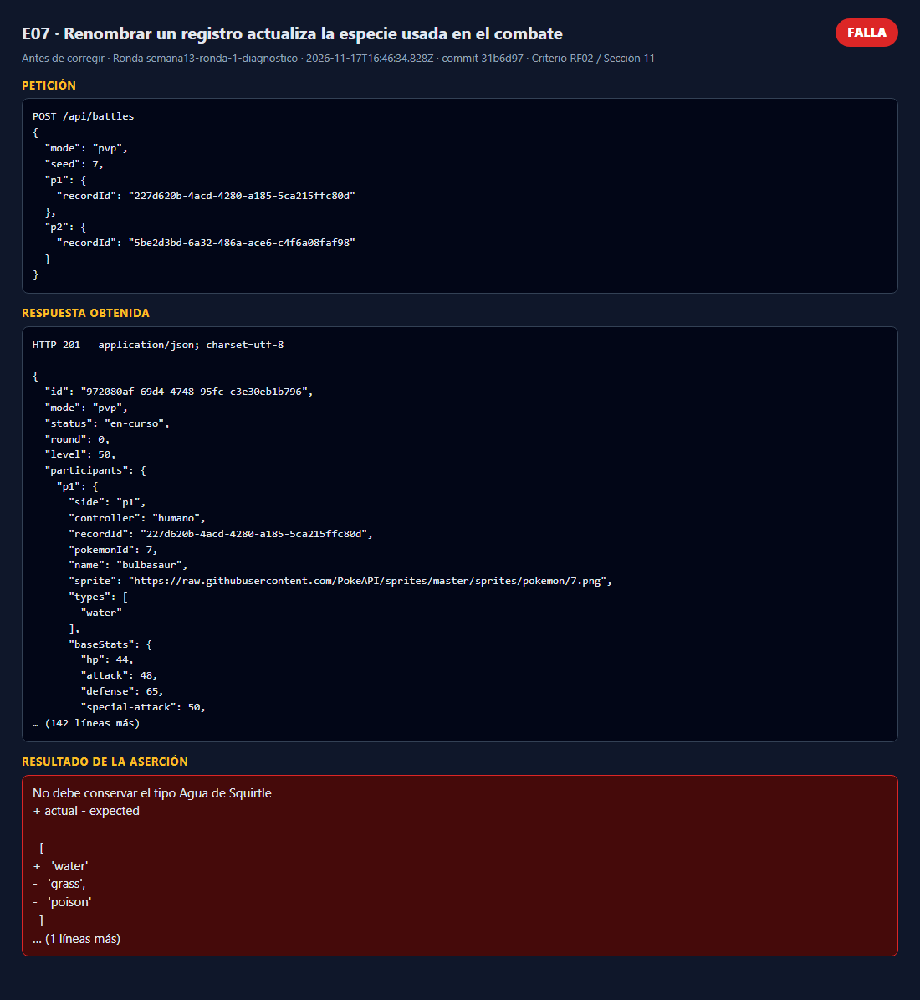
pokemonId 7 y tipo water.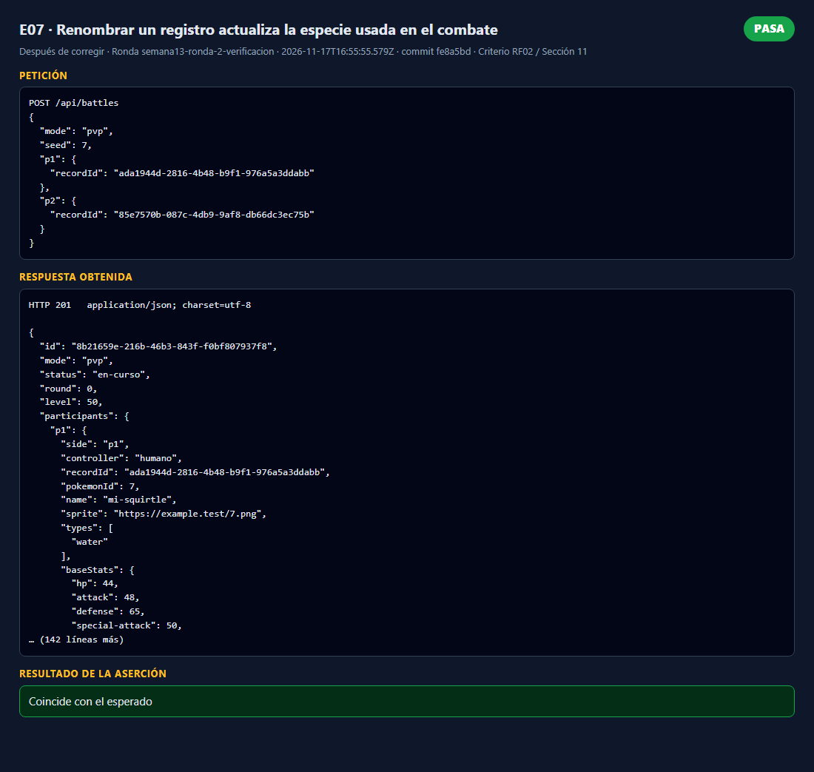
pokemonId 1 y tipos grass/poison.| Severidad / prioridad | Baja / P3 |
| Casos | E06, N05 |
| Pasos | GET /api/no-existe, DELETE /api/records, POST /api/pokemon/pikachu, GET /api/pokemon/. |
| Esperado / actual | Esperado: 404 con {"error": …} (contrato CA15). Actual: 404 con la página HTML «Cannot GET /api/no-existe» de Express. |
| Relación | No es una reincidencia de D06. D06 corrigió los errores del cuerpo JSON; esta ruta (sin coincidencia de URL) no estaba cubierta. |
| Corrección | Manejador app.use('/api', …) después de todas las rutas que responde 404 «Ruta de la API no encontrada». |
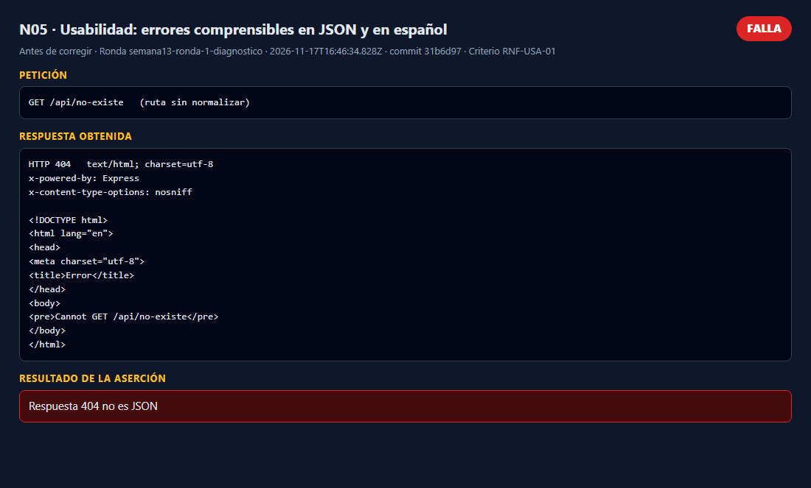
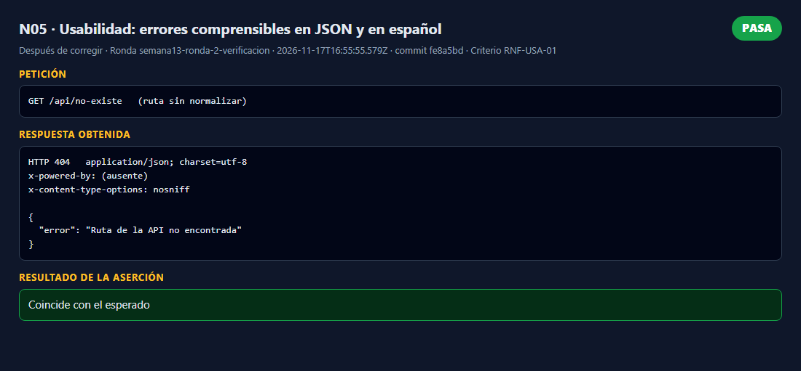
| Severidad / prioridad | Baja / P3 |
| Caso | E01 (valores límite 1, 39, 40, 41 y 5000) |
| Esperado / actual | Esperado: máximo 40 caracteres (el nombre más largo de la Gen 1 tiene 10; 40 deja margen para apodos). Actual: 41 y 5000 caracteres respondieron 201. |
| Corrección | NAME_MAX = 40 en lib/validation.js, aplicado en POST y PUT. |
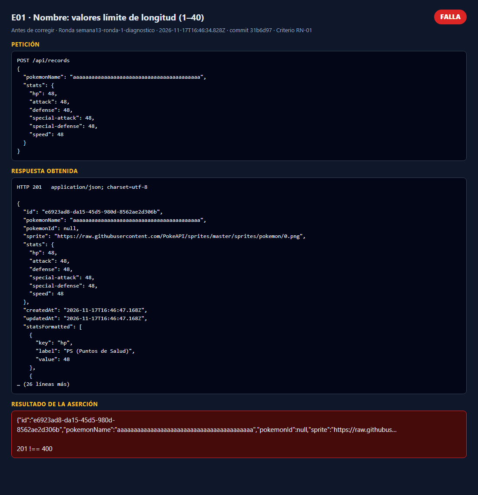
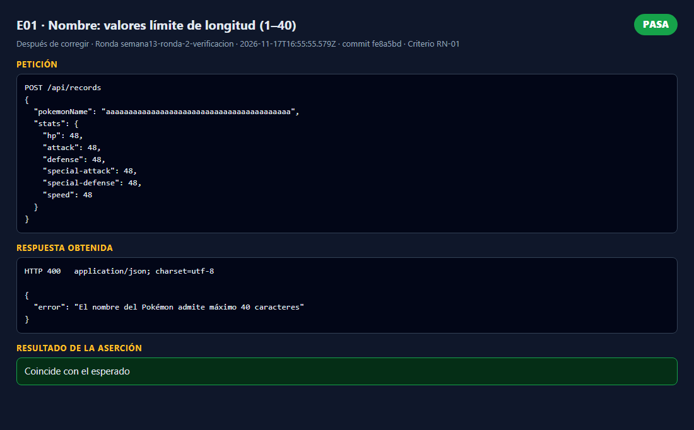
| Severidad / prioridad | Baja / P4 |
| Caso | N04 |
| Esperado / actual | Esperado: sin X-Powered-By y con X-Content-Type-Options: nosniff. Actual: X-Powered-By: Express y sin nosniff en /api/records. |
| Corrección | app.disable('x-powered-by') y un middleware que agrega nosniff a todas las respuestas. |
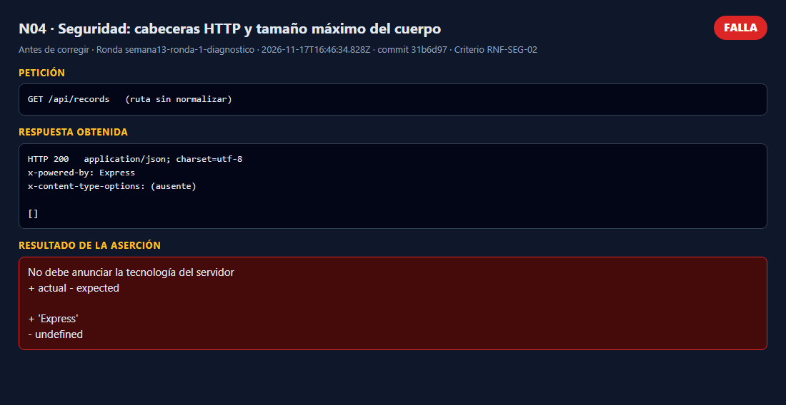
x-powered-by: Express; nosniff ausente.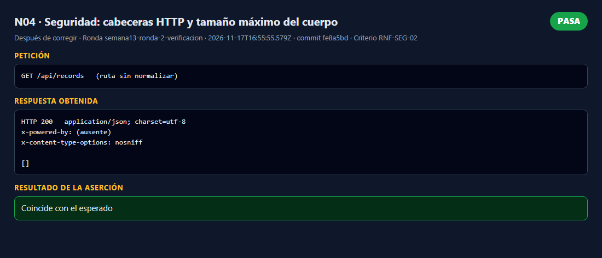
nosniff presente.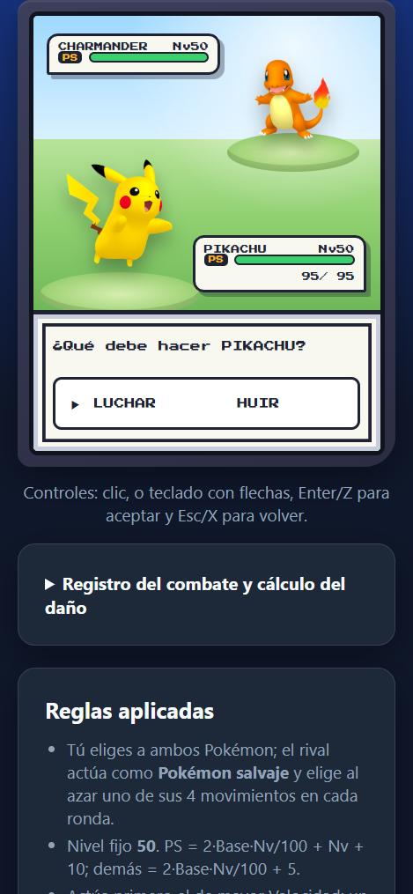
Según el archivo de pruebas previo (docs/pruebas/DEFECTOS.md, semana 7), la suite de 15 casos encontró seis fallos en la ronda
ronda-1-diagnostico (9 PASA / 6 FALLA). Se corrigieron y se verificaron en ronda-2-verificacion (15/15 PASA).
Durante el desarrollo del módulo de combate apareció un séptimo defecto. Ninguno reapareció en esta ronda.
| ID | Sev. | Falla observada (antes) | Cómo se corrigió | Verificación | ¿Reincide en sem. 13? |
|---|---|---|---|---|---|
| D01 | Media | GET /api/pokemon-list?limit=10&offset=150 devolvía 10 Pokémon y salía de la Gen 1 | Limitar por offset hasta 151 y rechazar parámetros inválidos con 400 | R03 PASA (sem. 7) | No · R03 PASA |
| D02 | Alta | POST con nombre de tres espacios respondía 201 | Validación del servidor: texto no vacío, recortado, estructura de stats | R04 PASA | No · R04 PASA |
| D03 | Alta | POST con hp=0 respondía 201 | Entero 1–999 sin convertir null, booleanos ni objetos | R05 PASA | No · R05 PASA |
| D04 | Alta | PUT con nombre de un espacio respondía 200 y alteraba el registro | Validar todos los campos antes de modificar el objeto | R06 PASA | No · R06 PASA |
| D05 | Alta | Con PokeAPI respondiendo 503, la API decía 404 «no existe» | Separar 404 (ausente), 502 (fallo externo) y 504 (tiempo agotado); revisar el estado también al sincronizar | R09 PASA | No · R09 PASA |
| D06 | Media | JSON truncado producía 400 con contenido HTML | Middleware de errores que siempre responde JSON con error | R10 PASA | No · R10 PASA. D15 es un caso distinto del mismo contrato |
| D07 | Media | Combate (C02): los registros creados desde el formulario llegaban sin imagen (sprite nulo) | El combate usa el mismo respaldo por número que el CRUD (lib/combat/battle.js) | C02 PASA antes de integrar el módulo (commit 8596d23). La ronda de diagnóstico de ese momento no se conservó | No · C02 PASA |
Lección para esta ronda: las suites anteriores probaban bien los campos obligatorios (D02–D04), pero no los opcionales (pokemonId, sprite), los caracteres especiales ni lo que la interfaz hace con los datos. Por eso los defectos nuevos se concentran en esos huecos y se encontraron con tablas de decisión completas y exploración guiada.
Objetivo. Comprobar desde la interfaz, como lo haría un usuario, que las reglas del sistema se aplican en lo que se ve y que los errores típicos de uso (campos vacíos, valores fuera de rango, doble clic, cancelar, búsquedas mal escritas, pérdida de conexión) se manejan bien.
Método. tests/ui/run-ui.js (npm run test:ui) controla Microsoft Edge 157 en modo headless mediante el
protocolo de DevTools, sin dependencias nuevas. Los clics y el teclado son eventos reales de entrada, así que también se aplican las
validaciones del navegador. Cada caso arranca la API con datos vacíos y la PokeAPI simulada (con imágenes reales) en una ventana de 1280 × 900.
Además de mirar la pantalla, compara lo mostrado con lo que guardó o calculó el servidor. Se guardan capturas automáticas y un JSON por caso con
las peticiones a la API, los avisos, los mensajes del combate y los errores de la consola.
Triage de la primera ejecución. La primera vez fallaron 6 casos. Cuatro eran errores del script, no de la aplicación,
y no se registraron como defectos: el script hacía clic mientras la página aún se desplazaba (U02, U13), un escenario de búsqueda estaba mal armado (U12)
y se leía el registro del combate plegado (U18). Se corrigió el script y la ronda 1 se repitió sobre el mismo código (fe8a5bd).
| Caso | Error del usuario o acción | Lógica que debe aplicarse en pantalla | Ronda 1 (fe8a5bd) | Ronda 2 (cab9c88) |
|---|---|---|---|---|
| U01 | Pulsar Guardar con el formulario vacío | El navegador exige el nombre; no se envía nada | PASA | PASA |
| U02 | Escribir PS = 0, 1000 y 2.5; luego 1 | Rango 1–999 entero en el formulario; con 1 se guarda | PASA | PASA |
| U03 | Nombre con solo espacios | El servidor lo rechaza y la pantalla muestra el motivo | PASA | PASA |
| U04 | Nombre <b>hack</b> | Rechazo por HTML (D08); nada se dibuja como HTML | PASA | PASA |
| U05 | Nombre de 41 caracteres | Límite de 40 (D16) avisado al usuario | PASA | PASA |
| U06 | Doble clic en Guardar | Un solo registro | FALLA | PASA |
| U07 | Editar con PS = 0 y cancelar | No se envía el cambio; el registro queda igual | PASA | PASA |
| U08 | Eliminar: cancelar la confirmación y luego aceptar | Cancelar no borra; aceptar borra y avisa | PASA | PASA |
| U09 | Buscar « PIKACHU » | Se recortan espacios y mayúsculas; muestra #025 | PASA | PASA |
| U10 | Buscar un Pokémon inexistente | Aviso de error y ningún «encontrado» (D10) | PASA | PASA |
| U11 | Buscar «Mr. Mime» | Mensaje que explica el formato (D12) | PASA | PASA |
| U12 | Buscar sin escribir ni elegir nada | Aviso «Escribe o selecciona un Pokémon»; sin consulta | PASA | PASA |
| U13 | Bajar la Velocidad de Pikachu a 10 en el CRUD y combatir | Vel. de combate 15: el salvaje (70) ataca primero | PASA | PASA |
| U14 | Renombrar Squirtle a «bulbasaur» en el formulario y combatir | Tipos Planta/Veneno en la pantalla de combate (D14) | PASA | PASA |
| U15 | Iniciar el combate sin elegir al salvaje | Mensaje y ninguna petición de combate | PASA | PASA |
| U16 | Elegir un salvaje con datos incompletos | Mensaje controlado con el nombre del registro (422) | PASA | PASA |
| U17 | Rapidez (Normal) contra Gastly (Fantasma) | Gastly no pierde PS; mensaje «No afecta al…» | FALLA | PASA |
| U18 | Surf contra Charmander | Barra, números y desglose iguales a la fórmula del servidor | PASA | PASA |
| U19 | Doble clic en un ataque | Se juega una sola ronda | PASA | PASA |
| U20 | Seguir jugando tras ganar (incluso forzando la petición) | Sin menú LUCHAR; el servidor responde 409 | PASA | PASA |
| U21 | Se corta la conexión al atacar | «No hay conexión…» y se puede reintentar | PASA | PASA |
| U22 | Recargar a mitad del combate | Vuelve a la preparación sin errores | PASA | PASA |
| U23 | HUIR y empezar otro combate | Escapa y el siguiente combate funciona | PASA | PASA |
Ronda 1: 21 PASA · 2 FALLA. Ronda 2, tras corregir D18 y D19: 23/23 PASA. Después de las correcciones se
repitió también la regresión de la API (semana13-ronda-3-regresion: 43/43) y las 17 unitarias. Evidencia:
docs/pruebas/evidencias/semana13-ui-ronda-1/ y semana13-ui-ronda-2/, con 29 capturas por ronda.
| Severidad / prioridad | Media / P2 (datos duplicados por un gesto común del usuario) |
| Caso | U06 |
| Pasos | 1) Abrir el CRUD. 2) Escribir el nombre doble-clic y 48 en las seis estadísticas. 3) Hacer doble clic en «Guardar». |
| Esperado / actual | Esperado: un registro. Actual: se enviaron 2 POST y aparecen dos registros «Doble-Clic». |
| Causa | El envío no se bloqueaba mientras se esperaba la respuesta del servidor. |
| Corrección | public/js/app.js: una marca saving ignora los envíos repetidos y el botón se desactiva hasta terminar. |
| Re-test | U06 PASA: 1 POST y 1 registro. |
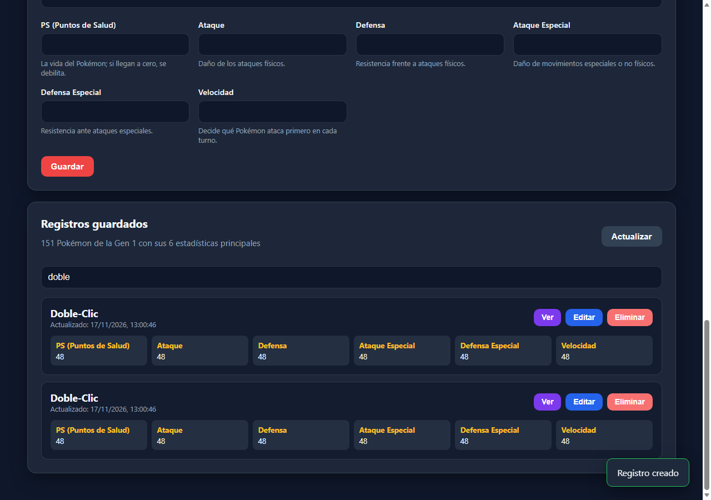
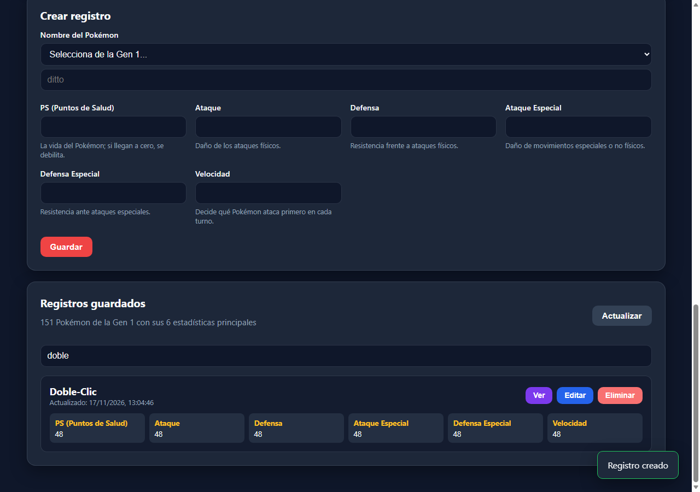
| Severidad / prioridad | Baja / P3 (texto incorrecto que ve el usuario; la lógica sí se aplica) |
| Caso | U17 |
| Pasos | 1) Combate Charmander contra Gastly salvaje. 2) LUCHAR → RAPIDEZ. |
| Esperado / actual | Esperado: «No afecta al GASTLY salvaje...». Actual: «No afecta a el GASTLY salvaje...». Gastly conserva sus PS en ambos casos. |
| Corrección | public/js/combate.js: nueva función objectOf que usa «al» para el salvaje y «a» para el Pokémon del jugador. |
| Re-test | U17 PASA. |
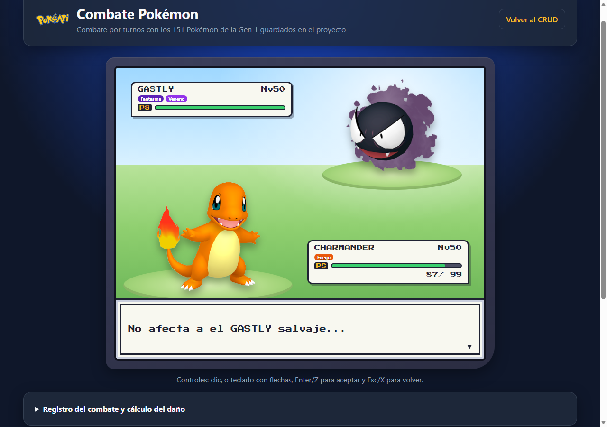
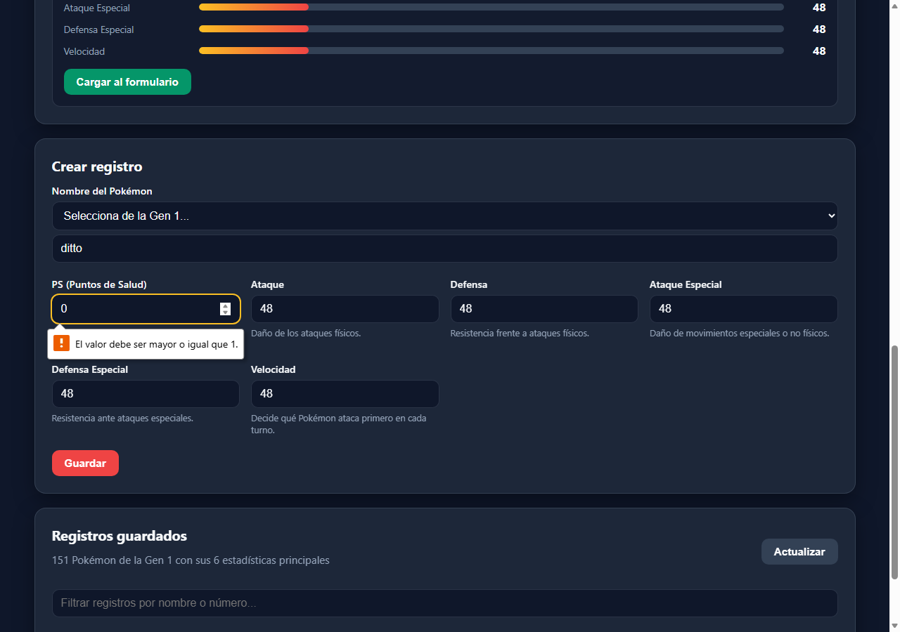
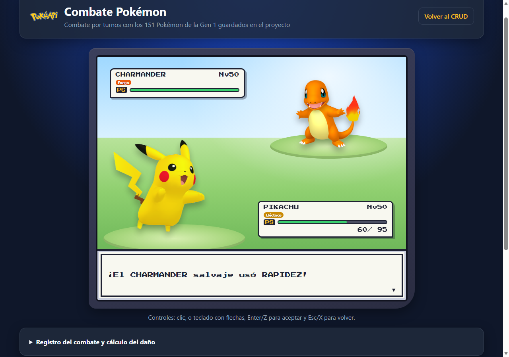
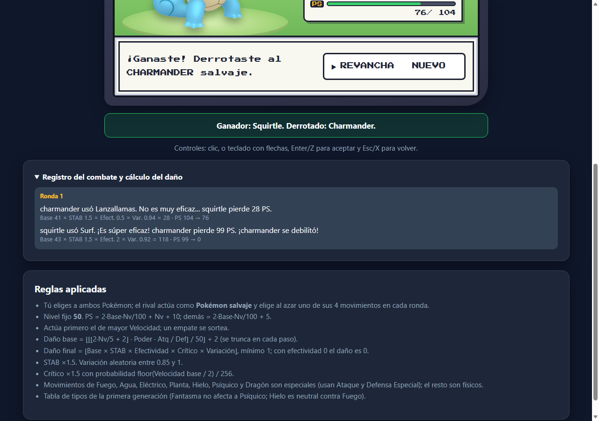
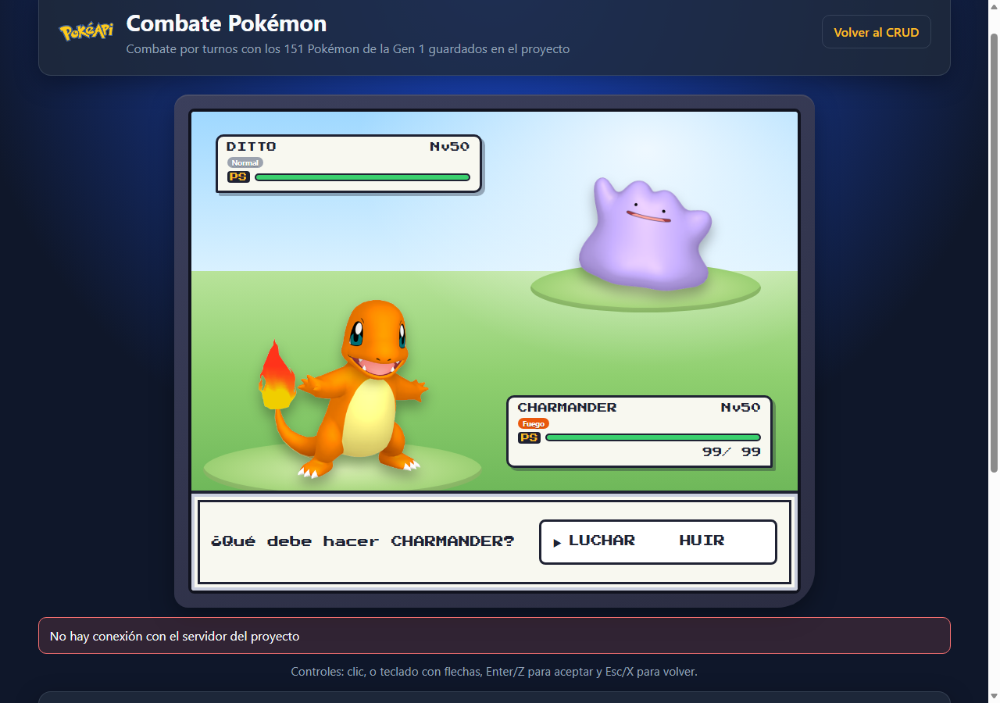
31b6d97): funcional en CRUD, catálogo, sincronización y combate, pero con 2 defectos altos de seguridad
y 5 medios. NO LISTO.cab9c88): 43/43 de API, 17/17 unitarias, 3/3 contra la PokeAPI real, 4/4 manuales y
23/23 de interfaz. La lógica de validación, búsqueda y combate se aplica en lo que ve el usuario. 0 defectos abiertos y 0 reincidentes.
LISTO para la demostración académica local.test/semana-13-defectos y deben integrarse a master con un pull request.
Si cambia el código o el ambiente, hay que repetir la suite con npm test.